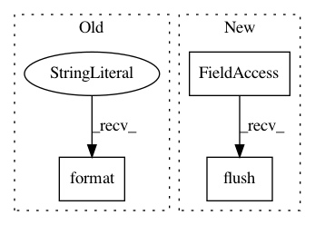

71d61f102189f8b7337567ca34ad590f2ddf4808,snntoolbox/simulation/target_simulators/INI_ttfs_target_sim.py,SNN,simulate,#SNN#,34
Before Change
guesses_b = np.argmin(first_spiketimes_b_l, 1)
none_class_b = -1 * np.ones(self.batch_size)
clean_guesses_b = np.where(undecided_b, none_class_b, guesses_b)
echo("{:.2%}_".format(np.mean(kwargs[str("truth_b")] ==
clean_guesses_b)))
if all(np.count_nonzero(output_b_l_t, (1, 2)) >= self.top_k):
print("Finished early.")
After Change
echo("{:.2%}_".format(current_acc))
else:
sys.stdout.write("\r{:>7.2%}".format(current_acc))
sys.stdout.flush()
if self.config.getboolean("conversion", "softmax_to_relu") and \
all(np.count_nonzero(output_b_l_t, (1, 2)) >= self.top_k):
print("Finished early.")
In pattern: SUPERPATTERN
Frequency: 3
Non-data size: 3
Instances
Project Name: NeuromorphicProcessorProject/snn_toolbox
Commit Name: 71d61f102189f8b7337567ca34ad590f2ddf4808
Time: 2018-02-27
Author: bodo.rueckauer@gmail.com
File Name: snntoolbox/simulation/target_simulators/INI_ttfs_target_sim.py
Class Name: SNN
Method Name: simulate
Project Name: tensorflow/models
Commit Name: 2d34259281a6251cbdc67103ce8a1310010b8ceb
Time: 2020-10-05
Author: dhr@google.com
File Name: orbit/controller.py
Class Name: Controller
Method Name: _train_n_steps
Project Name: Maluuba/nlg-eval
Commit Name: 5908b4c30fc7e1845657fc47f41391828ed35c13
Time: 2018-06-26
Author: shikhar.sharma@microsoft.com
File Name: nlgeval/pycocoevalcap/meteor/meteor.py
Class Name: Meteor
Method Name: _stat